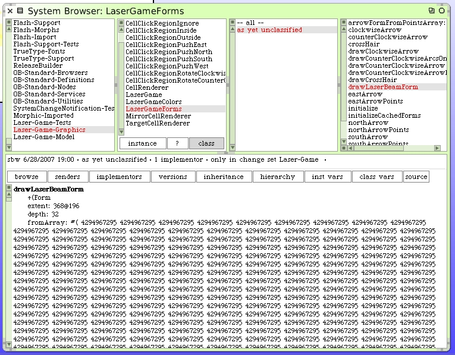
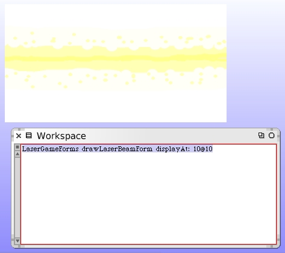

We hand-crafted this form. We need to be able to store this form in our code. We could save it as an external file and then load it for our game. However it's a simpler matter, for now, to retain the form content somehow in our code. Fortunately Forms have the ability to generate themseleves to method code. With the drawing still open and not occluded, open up a fresh Transcript window. Ensure the Transcript window is empty. Then paste this code into the panel rectangle inspector.
(Form fromDisplay: (self bounds insetBy: 6))
storeOn: Transcript.
Transcript show: ''; cr
Note we are not working with the scaled version of the form here but rather the full sized one. When you execute this, the contents of the form writes itself onto the Transcript as Squeak code. It's a pretty big chunk of code.
(Form
extent: 368@196
depth: 32
fromArray: #( 4294967295 4294967295 4294967295 4294967295 4294967295 4294967295 4294967295 4294967295 4294967295
4294967295 4294967295 4294967295 4294967295 4294967295 4294967295 4294967295 4294967295 4294967295 4294967295 4294967295 4294967295
4294967295 4294967295 4294967295 4294967295 4294967295 4294967295 4294967295 4294967295 4294967295 4294967295 4294967295 4294967295 4294967295
4294967295 4294967295 4294967295 4294967295 4294967295 4294967295 4294967295 4294967295 4294967295 4294967295 4294967295 4294967295 4294967295
4294967295 4294967295 4294967295 4294967295 4294967295 4294967295 4294967295 4294967295 4294967295 4294967295 4294967295 4294967295 4294967295
4294967295 4294967295 4294967295 4294967295 4294967295 4294967295 4294967295 4294967295 4294967295 4294967295 4294967295 4294967295 4294967295
4294967295 4294967295 4294967295 4294967295 4294967295 4294967295 4294967295 4294967295 4294967295 4294967295 4294967295 4294967295 4294967295
4294967295 4294967295 4294967295 4294967295 4294967295 4294967295 4294967295 4294967295 4294967295 4294967295 4294967295 4294967295 4294967295
4294967295 4294967295 4294967295 4294967295 4294967295 4294967295 4294967295 4294967295 4294967295 4294967295 4294967295 4294967295 4294967295
4294967295 4294967295 4294967295 4294967295 4294967295 4294967295 4294967295 4294967295 4294967295 4294967295 4294967295 4294967295 4294967295
4294967295 4294967295 4294967295 4294967295 4294967295 4294967295 4294967295 4294967295 4294967295 4294967295 4294967295 4294967295 4294967295
4294967295 4294967295 4294967295 4294967295 4294967295 4294967295 4294967295 4294967295 4294967295 4294967295 4294967295 4294967295 4294967295
4294967295 4294967295 4294967295 4294967295 4294967295 4294967295 4294967295 4294967295 4294967295 4294967295 4294967295 4294967295 4294967295
4294967295 4294967295 4294967295 4294967295 4294967295 4294967295 4294967295 4294967295 4294967295 4294967295 4294967295 4294967295 4294967295
4294967295 4294967295 4294967295 4294967295 4294967295 4294967295 4294967295 4294967295 4294967295 4294967295 4294967295 4294967295 4294967295
4294967295 4294967295 4294967295 4294967295 4294967295 4294967295 4294967295 4294967295 4294967295 4294967295 4294967295 4294967295 4294967295
4294967295 4294967295 4294967295 4294967295 4294967295 4294967295 4294967295 4294967295 4294967295 4294967295 4294967295 4294967295 4294967295
4294967295 4294967295 4294967295 4294967295 4294967295 4294967295 4294967295 4294967295 4294967295 4294967295 4294967295 4294967295 4294967295
4294967295 4294967295 4294967295 4294967295 4294967295 4294967295 4294967295 4294967295 4294967295 4294967295 4294967295 4294967295 4294967295
4294967295 4294967295 4294967295 4294967295 4294967295 4294967295 4294967295 4294967295 4294967295 4294967295 4294967295 4294967295 4294967295
....
...
4294967295 4294967295 4294967295 4294967295 4294967295 4294967295 4294967295 4294967295 4294967295 4294967295 4294967295 4294967295 4294967295
4294967295 4294967295 4294967295 4294967295 4294967295 4294967295 4294967295 4294967295 4294967295 4294967295)
offset: 0@0)
The entire contents was not reproduced here.
Select all of the contents of the Transcript window and copy it to your paste buffer (clipboard). Now open up a class hierarchy browser on the LaserGameForms class and create a new class method called #drawLaserBeamForm. Paste the contents of your clipboard into this method. Be sure to add the "^" where the form is created so that this method will answer it properly. When you save the method it will take a few seconds for Squeak to compile.
We need to be sure this method correctly captured our form. Let's open up a workspace window and try to draw our new form on the screen.
We need to complete the work to include this form in our form caching system. Here's the modified #initializeCachedForms class method.
initializeCachedForms
"LaserGameForms initializeCachedForms"
| form |
CachedForms := Dictionary new.
form := self arrowFormFromPointsArray: self northArrowPoints.
CachedForms at: #north put: form.
form := self arrowFormFromPointsArray: self eastArrowPoints.
CachedForms at: #east put: form.
form := self arrowFormFromPointsArray: self southArrowPoints.
CachedForms at: #south put: form.
form := self arrowFormFromPointsArray: self westArrowPoints.
CachedForms at: #west put: form.
form := self drawCounterClockwiseArrow.
CachedForms at: #counterClockwise put: form.
form := self drawClockwiseArrow.
CachedForms at: #clockwise put: form.
form := self drawCrossHair.
CachedForms at: #crossHair put: form.
form := self drawLaserBeamForm.
CachedForms at: #laserBeam put: form.
Again, when we introduce a new form into out cache, for our running Squeak image, we need to run that "LaserGameForms initializeCachedForms".
As a last step to form cache creation, add this class method.
laserBeam
CachedForms isNil ifTrue: [self initializeCachedForms].
^CachedForms at: #laserBeam